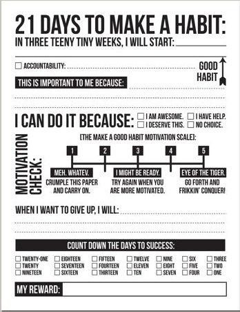

Strategy Three:
Make it a Habit!
By coming to this strategy you are ready to engage in journaling techniques that will create a lifelong impact on your future. Seeing the change and benefits through journaling can take different amounts of time depending on the person, and to see them work you need to make it a habit. Set a reminder on your phone at least once every other day when you usually have time available. This is usually for most students in between classes, or right before bed. To make journaling a habit it is important to realize how they are formed. In Charles Duhigg’s The Power of Habit Book, the author details how a cue is triggered to cause a routine, and then to lead to a reward whether it be good or bad. But the most important part about this book is the hidden component. This component is detailed by Duhigg in his book as craving. Craving is an essential part to creating a habits that stick. For a really good app that you can manage all your entries and set reminders, I recommend DayOne.